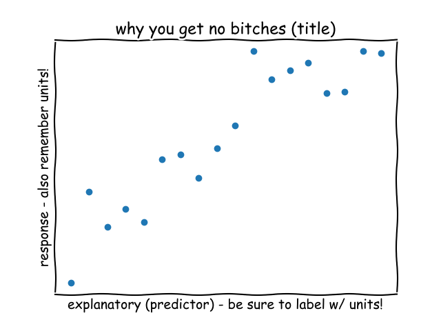
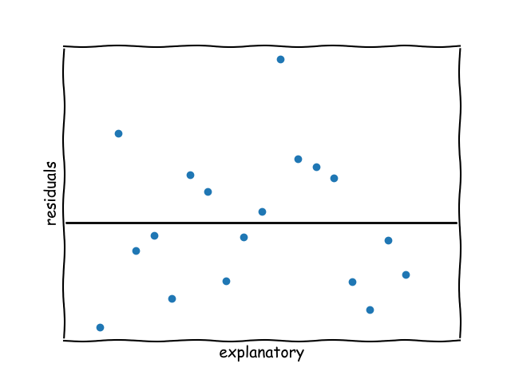
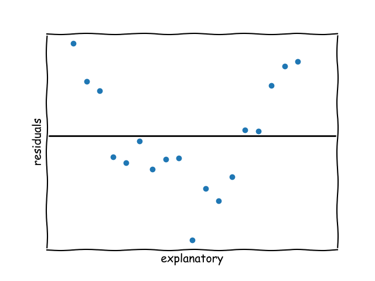

back to all liu packets
back to home
hw packet 3
displaying relationships: scatterplots
describing a relationship (cdofs)
- context
- direction (+/-/none)
- outliers
- form (linear/nonlinear)
- strength (weak/moderate/strong)
scatterplot format

displaying relationships: correlation
\[r=\frac{\Sigma z_x z_y}{n-1}\]
don't know why he wrote this, probably low priority
interpreting \(r\)
direction: +/-
form: always linear you silly billy
strength:
| -1 |
-.8 |
-.5 |
0 |
.5 |
.8 |
1 |
| strong neg |
fairly strong neg |
moderate neg |
weak af |
moderate pos |
fairly strong pos |
strong pos |
properties of \(r\)
- unitless
- swapping x & y gives the same val
- \(r \neq \text{slope}\)
outliers
- unusual values in pattern
- can strengthen or weaken \(r\) depending on if they're along the line
correlation isn't causation btw
prediction, residuals, interpreting a regression line
prediction
\[\hat{y}=a+bx\]
- \(\hat{y}\)=predicted response variable
- \(a\)=y-intercept
- \(b\)=slope
be careful of extrapolation, you should never use it!
residuals & other stuff
\[\text{residual}=\text{actual}-\text{predicted}\]
\[\]
interpretation
- y-intercept: "when \([x]=0\), the predicted [y-context] is [y-int]"
- slope: "w/ each additional [x-context] the predicted [y-context] [inc/dec] by [slope]"
- resid: "the actual [y-context] was [resid] [above/below] the predicted value for [x]"
lsrl & residual plots
lsrl = least squares regression line
it's the line w/ the smallest sum of \([residuals]^2\)
residual plots (run linreg first btw)
linear association residual plot

nonlinear association residual plot

random scatter → linear association